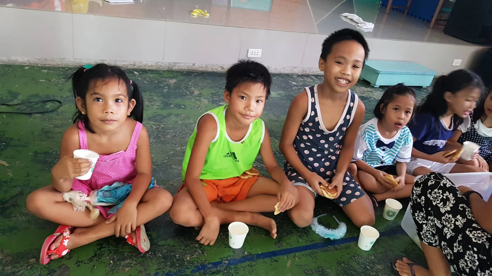

Our Mission
Our mission is to feed and nourish Filipino children and engage the country in the fight to end hunger and malnutrition.
Reach Out Feed Philippines
Our mission is to feed and nourish Filipino children and engage the country in the fight to end hunger and malnutrition.

#SaloSalo
Around 2 to 3 in every 10 Filipino children suffer from stunting. A reminder that too many are growing up hungry, weak, and surrounded by unhealthy environments.
Through #SaloSalo, we work with communities near landfills, providing daily nutritious meals and supplements to children and families suffering from malnutrition. The “A Million Meals” program aims to nourish 5,000 individuals for 120 days. Beyond feeding, #SaloSalo promotes clean-air and zero-waste initiatives that address the root causes of poor health, helping them regain health, rebuild their lives, and move toward self-sufficiency.
Documentary features on the communities we serve.
Take a look at the condition of the kids & community we are serving and how we try to make a difference at Sitio Dumpsite, Antipolo. The video is a documentary by Brigada, a Philippine investigative documentary television program broadcast by GMA News TV.
#ProjectBaon
Poor nutrition and health among schoolchildren contribute to the inefficiency of the educational system. Nutritional and health status are powerful influences on a child’s learning and on how well a child performs in school.
#ProjectBaon provides daily and consistent nutritious school meals of malnourished children in poor communities in the Philippines. We need your help as we try to assist these children so that they can reach their full potential for growth and learning.
Your ₱500 or $12 can sponsor the meal of a child for a full month!
“Some of them are really looking forward to just this meal for the day.”
Our mission is to feed and nourish Filipino children and engage the country in the fight to end hunger and malnutrition.
Our vision is to see every Filipino child healthy, nourished and empowered to reach their maximum potential for growth and learning.
More than just feeding, every meal we serve is fortified with a balance of nutrients, designed specially for the needs of undernourished school age children.
Join us and be a volunteer. Teach, cook or serve! Get involved and let’s feed more children!